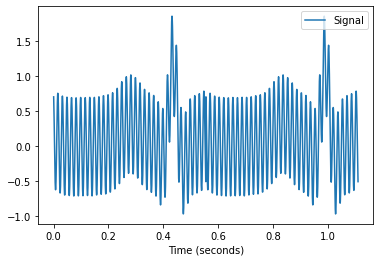

Lab 8 - FIR

Neste laboratório iremos processar o sinal de ECG que vocês precisam processar na APS2. Vocês podem e devem usar o código do laboratório na APS.
Preencher ao finalizar o lab
- TODO: MARCO
Lab
| Exemplo base | LAB |
|---|---|
SAME70-Examples/ TODO: CODIGO EXEMPLO  |
Labs-8-RTOS-ADC-FIR |
Código exemplo
- Vamos modificar o código exemplo
TODO: CODIGO EXEMPLO, faça uma cópia do seu lab para a nova pasta no seu repositórioLabs/9-RTOS-ADC-FIR
Terminal
Esse exemplo faz uso da comunicação UART para debug de código (via printf), para acessar o terminal no atmel estúdio clique em: View Terminal Window
Configure o terminal para a porta que (COM) correta (verificar no windows) e configure para operar com um BaudRate de 115200.
Info
Iremos utilizar os seguintes periféricos diretamente:
- AFEC1 (EXT1 PC31)
- TC1 canal 1
Indiretamente (o projeto já usa):
- DAC0 (PB13)
- TC0 canal 0
Conectando
Vamos conectar o pino PB13 que gera o sinal o sinal analógico do batimento cardíaco ao pino PC31 do EXT1 que possui o AFEC1 conforme imagem e diagrama a baixo:
- TODO INSERIR IMAGEM
┌───────────────────┐
│ ┌─────┐ │
│ │afec │◄├────┐
│ └─────┘ │ │
│ │ │ ecg
│ ┌─────┐ ┌─────┐ │ │
│ │ tc0 ├─►│dac ├─x────┘
│ └─────┘ └─────┘ │ PB13
└───────────────────┘
ECG
O sinal ECG gerado no pino PB13 possui a forma de onda a seguir:

E se analisarmos o espectro do sinal via transformada de fourier, obtemos a seguinte composição espectral:

Question
O que você consegue extrair de informações dos gráficos anteriores?
No primeiro (ecg no tempo) podemos ver claramente que existe uma alta frequência no sinal, mas que o envelope é a informação do ecg.
Já no fourier somos capazes se distinguir que existem duas regiões com bastante informações, uma de baixa frquência (0..25)Hz e outra de 60Hz.

60 Hz
Notamos claramente que existe um sinal centrada em 60Hz, isso é muito comum quando trabalhamos com eletrônica e reflete o 60Hz da rede elétrica que é propagada de diversas formas para o transdutor responsável em amostrar o dado do pulso elétrico do corpo humano, causando um ruído no sinal não desejável.
Para trarmos o dado corretamente teremos que filtar o ruído. Lembre que em alguns paises a frequência da rede elétrica é de 50Hz e não de 60Hz como no Brasil.
Filtros digitais
Filtragem de sinal pertence a uma grande área do conhecimento que é processamento de sinais, nesse laboratório iremos tratar do tema de forma superficial. Mas exemplos de aplicação de filtragem digital são:
- Remoção de ruído
- Processamento de Áudio
- Extração de parâmetros
- ...
Tip
Para saber mais leia: The Scientist and Engineer's Guide to Digital Signal Processing
FIR
O Finite Impulse Response (FIR) é uma técnica de processamento digital de sinais (DSP) que é capaz de realizar filtragens em um sinal. Com o FIR somos capazes de aplicar um filtro do tipo:
- passa baixas: Elimina as altas frequências
- passa altas: Elimina as baixas frequências
- mata faixa: Elimina uma faixa de frequências do sinal
Filtros digitais do tipo FIR possuem as seguintes vantagens:
- São estáveis por natureza (não importa o parâmetro do filtro, o sinal de saída vai ser estável)
- Podem ser projetados para ter fase linear
- Possuem flexibilidade no seu projeto
- São fáceis de implementar
O filtro possui a seguinte estrutura:
$$y[n] = b_0*x[n] + b_1*x[n-1] + .... b_n*x[n-N]$$
Onde:
- $y[n]$: Valor filtrado
- $x[n-N]$: Valor do dado não filtrado, atrasado de N amostras
- $b_n$: Coeficiente do filtro
- $N$: Ordem do filtro
Podemos representar a equação graficamente:

Fonte: https://en.wikipedia.org/wiki/Finite_impulse_response
- $Z^{-1}$: Significa um atraso na amostra
Projeto do filtro
Podemos realizar o projeto do filtro FIR (achar a ordem N e os coeficientes B) de diversas maneiras diferentes, cada um possui uma vantagem sobre a outra. Vamos utilizar o Equiripple Algorithm que possui ripples em torno da frequência de corte (fc).

Fonte: https://www.recordingblogs.com/wiki/equiripple-filter
O projeto do filtro envolve vários parâmetros e diversas escolhas, vamos verificarmos os mais importantes:
- $f_s$: Frequência de amostragem do sinal
- $f_c$: Frequência de corte, quando a componente espectral já possui um ganho baixo e não influencia 'tanto' no sinal. Na $f_c$ o ganho do sinal é geralmente -3dB, o que significa em volts, que o sinal possui $sqrt(½)=0.707$ do seu valor inicial.
Note
A filtragem não só altera o valor absoluto de um sinal, como também afeta sua frequência! Dependendo do que estiver analisando isso pode afetar o resultado final.
pyfda
Para o projeto do filtro vamos utilizar uma ferramenta em python pyfda que vai nos ajudar encontrar os coeficientes b e N do filtro. Para isso siga os passos de instalação a seguir:
git clone https://github.com/chipmuenk/pyFDA/
cd pyFDA
pip3 install -r requirements.txt --user
python3 -m pyfda.pyfdax
Configure o filtro para:

E agora clique em DESIGN FILTER. Vá na aba b,a e salve os valores de b em um txt, vamos usar mais tarde !

firmware
Esse exemplo possui:
task_mxt: Leitura do touchtask_lcd: Para exibição dos dados no LCDtask_adc: Inicia um TC para fazer a conversão do ADC, recebe o dado e envia por uma fila.TC1: Timer configurado em 50Hz para fazer gerar o trigger da conversão analógicaAFEC: Para realizar a leitura do potenciometro
Note
Iremos usar o TC como trigger do AFEC (no lugar da task_adc fazer isso como no lab RTOS-ADC) pelos seguinte motivos:
- Garantir que a aquisição ocorra na taxa especificada
- Permitir uma taxa de aquisição maior que o tick do RTOS
Plotando ADC no tempo
Vamos modificar a task_lcd para exibir o valor da leitura do potenciometro no tempo. O resultado esperado é o seguinte:
Tip
- Você deve fazer essa implementação dentro do
ifque pega um dado da filaxQueuePlot:if (xQueueReceive( xQueuePlot, &(plot), ( TickType_t ) 100 / portTICK_PERIOD_MS)) { // aqui dentro!! } - O dado que deve ser plotado é o
plot.raw - Crie um contador que fará o incremento do eixo
x - dica: use
x = x + 5; - Incremente esse contador até chegar no final do LCD (
ILI9488_LCD_WIDTH) - zere o contador quando chegar no final
- apague a tela quando chegar no final
draw_screen() - Plote um circulo no lcd para cada ponto, exemplo:
ili9488_set_foreground_color(COLOR_CONVERT(COLOR_BLACK)); ili9488_draw_filled_circle(x, ILI9488_LCD_HEIGHT - plot.raw / 16, 2 );
Agora você deve modificar o plot, para plotar além do plot.raw exibir o plot.filtrado que mais para frente no lab será o nosso dado do ADC filtrado com o filtro projetado anteriormente. Atualmente ele é o valor plot.raw deslocado de 100.
Tip
Utilize outra cor para mostrar esse dado:
ili9488_set_foreground_color(COLOR_CONVERT(COLOR_RED));
Resumo Tarefas
- Exibir o valor
plot.rawgraficamente no lcd- Exibir o valor
plot.filtradograficamente no lcd
- Exibir o valor
Filtrando dado
Vamos agora aplicar o filtro projetado anteriormente no dado adc, iremos utilizar uma biblioteca da ARM chamada de CMSIS DSP 4 que possui uma série de funções matemáticas e de processamento de sinais. Dentro dessa biblioteca, iremos utilizar a função arm_fir_init_f32 e arm_fir_f32 que respectivamente: inicializa o filtro FIR do tipo float_32 e aplica o filtro (convolução) ao sinal.
Tip
De uma olhada como essas funções são implementadas, elas abusam bastante da topologia interna do ARM (bem sistema hardware software) para entregarem uma função bem otimizada:
Inicializando filtro
Crie os defines a seguir:
#define NUM_TAPS 8 // ordem do filtro (quantos coefientes)
#define BLOCK_SIZE 1 // se será processado por blocos, no caso não.
Agora vamos copiar os coeficientes do filtro que foram gerados na etapa do projeto do filtro para a variável firCoeffs32:
const float32_t firCoeffs32[NUM_TAPS] ={0.12269166637219883,
0.12466396327768503,
0.1259892807712678,
0.12665508957884833,
0.12665508957884833,
0.1259892807712678,
0.12466396327768503,
0.12269166637219883};
Agora dentro da task_adc (apos o TC_ini), vamos iniciar o filtro:
/* Cria buffers para filtragem e faz a inicializacao do filtro. */
float32_t firStateF32[BLOCK_SIZE + NUM_TAPS - 1];
float32_t inputF32[BLOCK_SIZE + NUM_TAPS - 1];
float32_t outputF32[BLOCK_SIZE + NUM_TAPS - 1];
arm_fir_instance_f32 S;
arm_fir_init_f32(&S, NUM_TAPS, (float32_t *)&firCoeffs32[0], &firStateF32[0], BLOCK_SIZE);
Resumo Tarefas
- Criar define
NUM_TAPS - Criar define
BLOCK_SIZE - Criar constant com coefientes do filtro
firCoeffs32 - Modificar
task_adce inicializar filtro
Processando
Modifique o while da task adc para realizar a filtragem e enviar para o LCD exibir.
int i = 0;
while(1){
if (xQueueReceive( xQueueADC, &(adc), 100)) {
if(i <= NUM_TAPS){
inputF32[i++] = (float) adc.value;
} else{
arm_fir_f32(&S, &inputF32[0], &outputF32[0], BLOCK_SIZE);
plot.raw = (int) inputF32[0];
plot.filtrado = (int) outputF32[0];
xQueueSend(xQueuePlot, &plot, 0);
i = 0;
}
Resultado esperado:
B
- Criar um novo filtro de ordem 12 e trocar o atual
A
No lugar de mostrar uma linha no tempo, fazer um ponto em um circulo